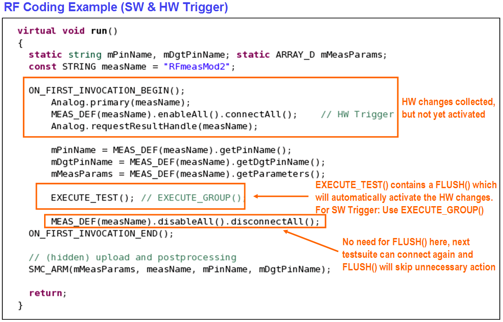
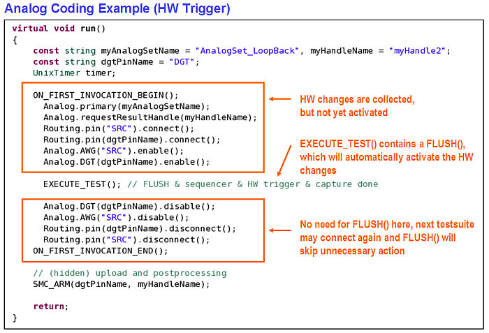
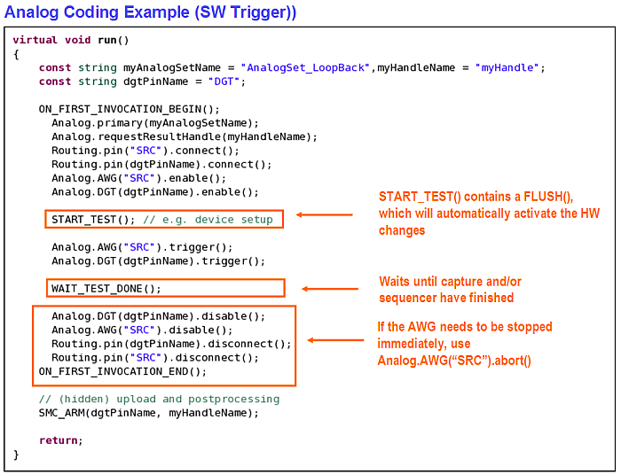
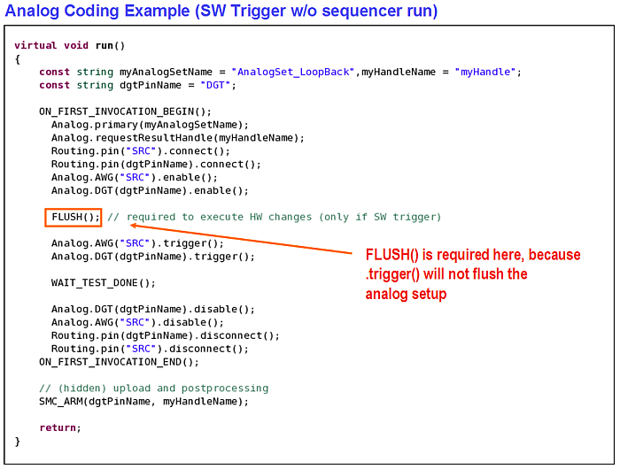

Working with FLUSH()
When using the FLUSH API, the following points should be considered:
- FLUSH is a semi-automatic mean to minimize HW access and to optimize HW setups to achieve better test time.
- Each HW access takes time. Analog setups may get cached and activated (flushed) in a single shot when performing a FLUSH(). In addition the internal wait time can be optimized, which would be otherwise required for each single HW access.
- HW setup optimization means that FLUSH may recognize situations where it can avoid redundant setups for example, a disconnect, if the next test suite is performing a connection again).
- FLUSH() execution time is in a range of 1 to 10 and more ms dependent on the complexity of the HW changes.
- It scales with number of cores, actions, sequencer program length and tester period. MSE is in the range of 60%.
- Although FLUSH() tries to optimize execution time, unnecessary calls of FLUSH() will add test time.
- Debugging may require to put additional FLUSH()'s in the code to force immediate activation to allow visibility in debug tools, which needs to be removed later for production.
Example
Test program with 500 testsuites with one unnecessary FLUSH() each may end up with an overhead of 500 x 3ms = 1.5s
Useful Facts about the use of FLUSH
- EXECUTE_TEST, EXECUTE_GROUP, START_TEST, DIGITAL_CAPTURE_TEST and NB_DIGITAL_CAPTURE_START contain a FLUSH.
- FUNCTIONAL_TEST() only activates digital primaries such as timing and levels and, therefore, typically has a faster execution time.
- No FLUSH() is required, for example, for trigger(), abort() and getXXX()/isRunning().
- In most use cases, there is no need for the explicit usage of FLUSH(). This is shown in the
following examples.CAUTION If the device or the tester is in a critical setup for example, very high power or low power mode) and the next test potentially uses a
FUNCTIONAL_TEST()(which would NOT flush the disconnect) it is recommended to perform an explicitFLUSH()after the disconnect.
Example
The following examples show how to keep the use of FLUSH to a minimum in an example for an analog test using a hardware trigger.
Example 1

Example 2

Example 3

Example 4

Functional changes
- Introduced before SmarTest 6.3.2
- SmarTest 7.1.4: HW of analog modules cannot be accessed when the master clock is switched off. An error is issued and the message is displayed in the report window.